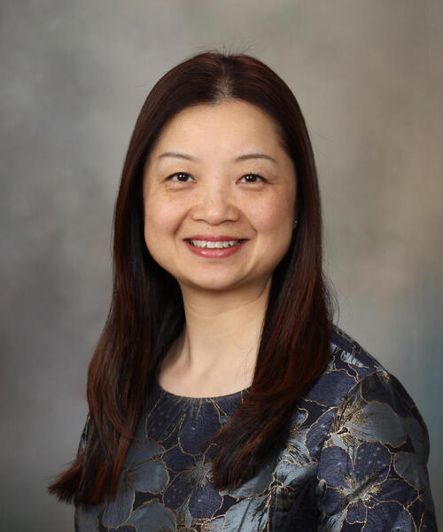

Data, Evaluation, and Coordination Center - Mayo Clinic
The Data, Evaluation, and Coordination Center (DECC) will support the data and evaluation activities and coordinate a learning collaborative towards mitigating the key barriers of cancer disparity
Our goals include:
(1)Establish effective and efficient administrative processes and infrastructure through scientific leadership, organizational processes, governance structure, effective oversight and operational procedures to achieve optimal communication, collaboration, coordination, and dissemination of the CUSP2CT research.
(2)Facilitate and coordinate data collection and management across the CUSP2CT program to facilitate evidence generation and rapid dissemination of methods and tools.
(3)Organize and facilitate collaborative efforts on program evaluation, engagement, and communication.
(4)Foster a learning collaborative in leading and coordinating trans-CUSP2CT research.
Principal Investigators
Dr. Folakemi T. Odedina
Dr. Folakemi T. Odedina is the Assoc. Director for the Center for Health Equity and Community Engagement Research (CHCR), site Director of CHCR Florida, and Director of Global Health Equity Program at Mayo Clinic. Dr. Odedina is an internationally recognized cancer researcher and academic leader. She has led global research programs for decades, primarily funded by the National Cancer Institute and the Department of Defense. This research focuses on developing cost-effective, community-based behavioral intervention programs to address prostate cancer in Black males. Her research, education, training and community outreach activities have exclusively focused on addressing health disparities in racial and ethnic minority and underserved communities. As a behavioral scientist, she conducts behavioral research across the translational continuum to test behavioral models, confirm who will benefit from behavioral interventions and examine how to deliver interventions in all settings.
Dr. Odedina's research program has developed and validated multiple behavioral models that include multilevel assessment of barriers and facilitators for the uptake of interventions, tested and adapted interventions that include behavioral clinical trials, and worked closely with community health workers to implement health intervention programs in diverse community settings worldwide. She has also been a leader in training future scientists whose backgrounds are underrepresented in biomedical research.
Dr. Qian Shi
 Dr. Qian Shi is the Assoc. Director of Quantitative Science and Director of Biostatistics Core of MCCC. The primary research interests of Dr. Shi are in the area of the conduct and methodology of clinical trials in cancer. Dr. Shi works to develop innovative statistical study design to run more efficient clinical trials that deliver effective, novel treatments to patients with cancer. Additional areas of active research include evaluation and methodology of surrogate endpoints, meta-analyses of individual patient data from a large collection of clinical trials, survival analysis, and prognostic and predictive biomarker analysis. The research conducted by Dr. Shi contributes to an increased understanding of tumor genetics and patient factors that make disease more or less aggressive, and provides innovations in conducting oncology clinical trials. When successful, the clinical trials that Dr. Shi participates in directly contribute to new treatment options for patients with cancer..
Dr. Hongfang Liu
Dr. Hongfang Liu is the Director of Biomedical Informatics at Mayo Clinic and is leading the Cancer Data Science and Informatics Transition Team at MCCC. The primary research focus of Hongfang Liu, Ph.D., is to facilitate the secondary use of clinical data for clinical and translational science research and health care delivery improvement using data science, artificial intelligence and informatics approaches. Dr. Liu's research has been extensively funded by the National Science Foundation and the National Institute of Health (NIH) since 2003. Her work accelerates the pace of knowledge discovery, implementation and delivery of improved health care. Dr. Liu is a member of several professional societies, including the American Medical Informatics Association (AMIA) and the International Society for Computational Biology (ISCB).